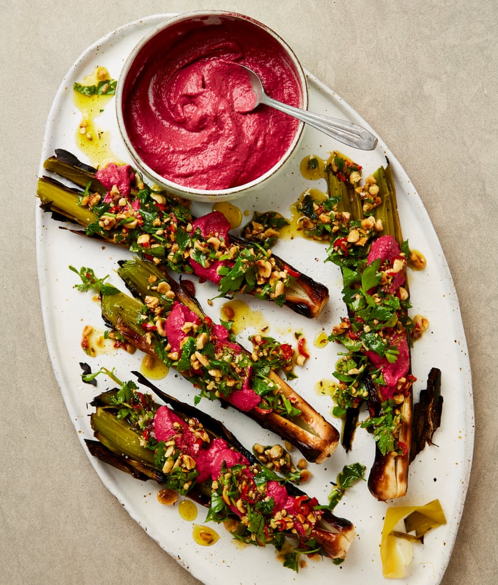

Roast leeks with beetroot tahini and hazelnut salsa

This very dramatic-looking dish can be cooked on a barbecue or in a hot oven (if the former, start them off on the hottest part of the barbecue, then move them to a cooler spot to cook through). These quantities make more tahini than you need for this dish – keep the excess in a sealed container in the fridge for up to three days, for drizzling over grilled meat or vegetables.
For the salsa
For the beetroot tahini
Heat the grill to high and put an oven rack on the top shelf. Lay the leeks 5cm apart on the oven rack and slide a large oven tray under them, to catch any cooking juices. Grill for 20 minutes, turning two or three times as required, until blackened all over. Turn down the grill to medium and cook the leeks for 15 minutes more, turning once, until they are charred all over and soft right through.
Meanwhile, make the salsa. In a small, dry frying pan set over a medium heat, toast the cumin and coriander for three or four minutes, until fragrant, then take off the heat, add the olive oil and leave to cool. Put all the other salsa ingredients in a medium bowl and, once it’s cool, stir in the spiced oil and a quarter-teaspoon of salt.
Now for the beetroot tahini. In a blender or small food processor, blitz the beetroot, lemon juice, vinegar and 50ml water, scraping down the sides of the bowl as you go. Add the tahini and a quarter-teaspoon of salt, blitz again until silky-smooth, then scrape into a bowl.
When the leeks are ready, put them on a board and cut down the length of each one to open it up; don’t cut all the way through. Sprinkle the insides with a good pinch of flaked salt, then transfer the leeks to a platter. Fill the insides with half the salsa and a good crack of pepper and spoon over a good amount of the tahini. Spoon on the remaining salsa and serve straight away with more tahini alongside.